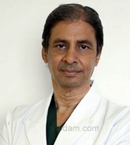

Dr. Ashok Rajgopal
QUALIFICATIONS
Chairman , MBBS, MS, MCh, FRCS, 33 years of experience
Awards
Awarded with the prestigious Padma Shri award, the fourth highest civilian award, for recognition of surgical excellence and contribution to the field of Orthopaedics in 2014.
Awarded with the Knee Ratna Award from Indian Medical Association, New Delhi and Life time award from Asia Pacific Arthroplasty Society
ABOUT DOCTOR
Dr Ashok Rajgopal is one of the most experienced & respected Orthopaedic surgeon in India.
With a coveted experience of over 32 years, he has a ground-breaking record of completing 25,000 Total Knee Replacement surgeries.
Dr Rajgopal was the honorary surgeon to the President of India.
Being an expert in sports medicine he had treated a number of famous sports persons like Pullela Gopichand (badminton player suffered a career threatening knee injury while playing doubles at the 1994 National Games at Pune)
He is also the first orthopaedic surgeon in India to perform Bilateral Total Knee Replacement surgery &MIS Unicompartmental surgery.
He hold a unique distinction of performing 28 Knee Replacement surgeries in under 12 hours.
Dr Rajgopal has been honoured with the prestigious Padma Shri award which is the fourth highest civilian award.
He has his articles in renowned print media like Times of India ,The Hindu, The New Indian Express.
SPECIALIZATION :
Bone and Joint Replacement
Arthroscopic Surgeries
Knee Surgery
WORK EXPERIENCE
Chairman, Fortis Memorial Research Institute, Gurgaon, 2016
Chairman, Medanta - The Medicity, Gurgaon, 2010
Director, Fortis Memorial Research Institute, Gurgaon, 2009
Head of Department, Sitaram Bhartia Institute , 2004
Senior Consultant, Moolchand Hospital, New Delhi , 2004
Senior Consultant, Sehgal Neurological Research Institute, Kailash Colony, New Delhi. , 2013
Senior Resident, Ormskirk General Hospital, Lancashire, United Kingdom , 1985
List Of Treatments
Elbow Replacement Surgery,
Elbow Arthroscopy,
Lateral Epicondyle Release (Tennis Elbow),
Fracture reduction and fixation,
Osteotomy,
Arthrolysis,
Shoulder Replacement Surgery,
Open Reduction of Fracture,
Repair of Shoulder Rotator Cuff,
Acromioclavicular Joint Repair,
Repair of dislocations,
Shoulder Labral Tears Surgery,
Surgical decompression,
Extensor mechanism realignment,
Arthrotomy,
Arthroscopic surgery,
Reduction of fractures open,
Closed Reduction for Fracture,
Arthroplasty,
Carpal Tunnel Release (CTR) Open or Endoscopic
...show all.
Viedo 1